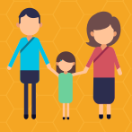
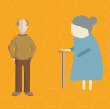

BUSINESS STRATEGY
MeAround could be used in the following scenarios:
- later lifer & relatives
- later lifer & doctor
- later lifer & nurse care
- Planning and development of more people-centered care facilities based on path data gathered with meAround
We plan to become market leaders by pursuing future innovation opportunities, because we know that by 2030 there will 19 million later lifers over the age of 65 in the UK. It is projected 6.2 million of those will have a long term limiting illness or disability. *
www.ageuk.org.uk




All rights reserved.